.jpeg)
.jpeg)
.jpeg)
.jpeg)
.jpeg)
.jpeg)
庆国集团
中国梦中国芯智慧生态农业饮食健康溯源
提供绿色产品引领健康生活服务百姓餐桌
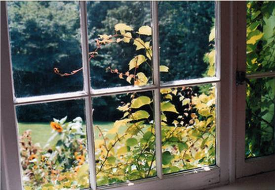在每一个雨露微染的早晨， 叫醒你的不再是扰人的喇叭和闹钟， 而是窗外清新的空气与嘤嘤鸟鸣...
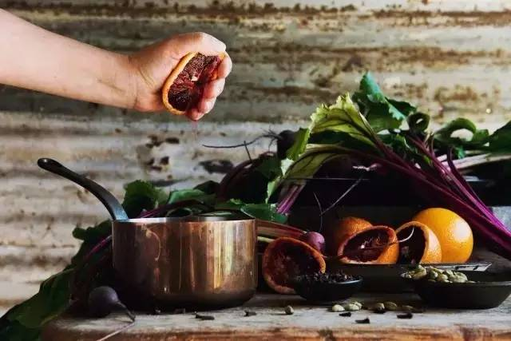早饭不再是匆忙咽下的冷面包， 而是从自家菜园新摘下的鲜蔬与果子， 还有刚刚煮好还热气腾腾的小米粥， 再沾点自己亲手酿制的果酱.....
为了这梦寐以求的生活， 这对英国夫妇却已经勇敢迈出了第一步！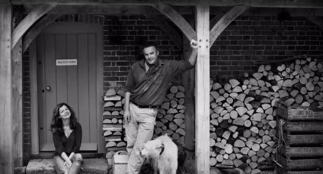
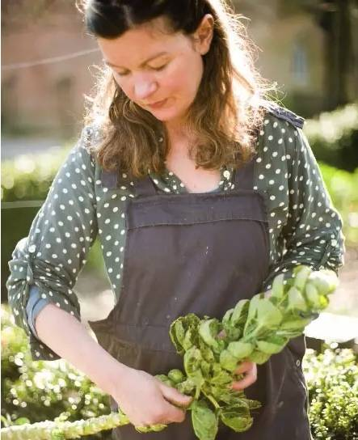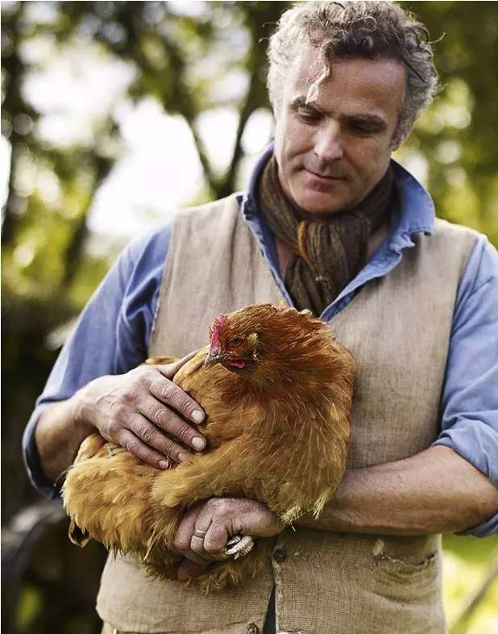这对夫妇名叫尼克和贝拉， 原本俩人都各自有着高薪稳定的工作， 房子车子票子啥都有了， 可他们却并不快乐， 总是觉得城市虽浮华却吵闹， 这生活也总缺少了点什么。 所有的事情就都开始改变了！
但当他们无意中遇到了这片农场后，
所有的事情就都开始改变了！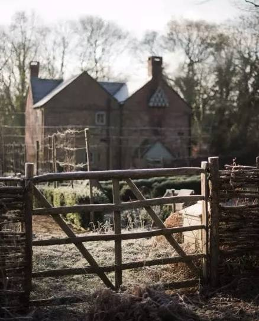
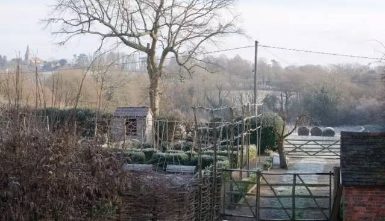这个农场位于伦敦近郊， 原本是一处种植着很多核桃树的农庄， 后来被荒芜了杂草丛生， 就变成了无人打理的荒野之地。
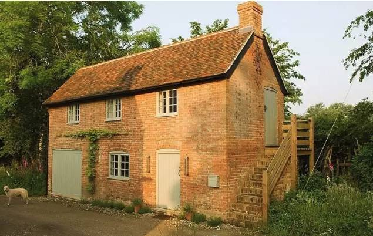虽然这里看起来渺无人迹， 但尼克和贝拉却是一眼就相中了！ 他们真心喜欢这块地方的僻静， 这样就不会被轻易打扰， 于是夫妻俩决定要在这里安新家！
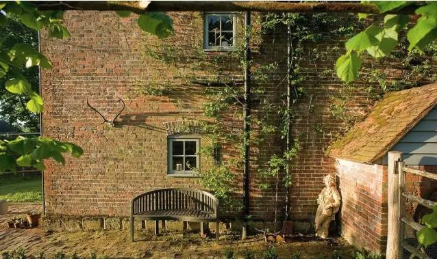在杂草丛生的农地里安新家？ 这不是在开玩笑的吧？ 可让人意想不到的是， 这对英国夫妇竟然真就辞去了工作， 然后花了整整9年的时间和精力， 让农场来了一次神奇大变身！
如今再去那农场时， 会发现杂草“离奇消失”了， 取而代之的是与厨房相连的一片菜园， 菜园旁边则是一片开阔的小草原， 四季里盛开着不同颜色的野花。
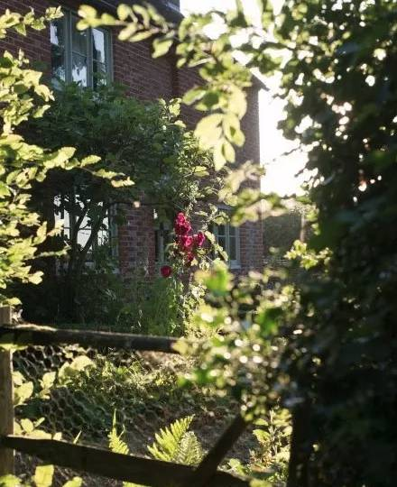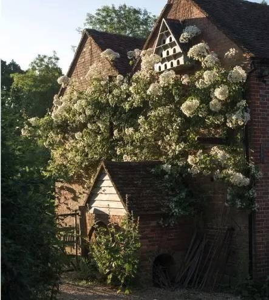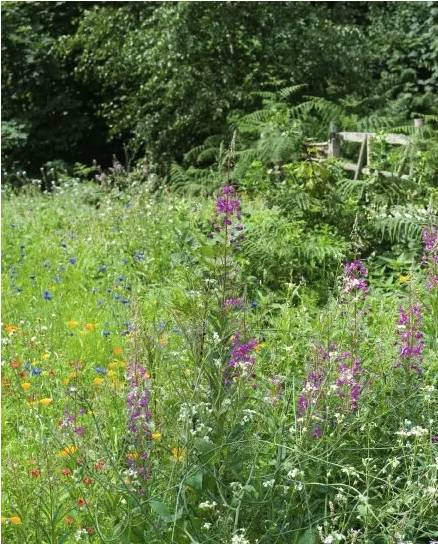他们甚至还栽树苗种树， 如今已经拥有了自己的一片小树林，
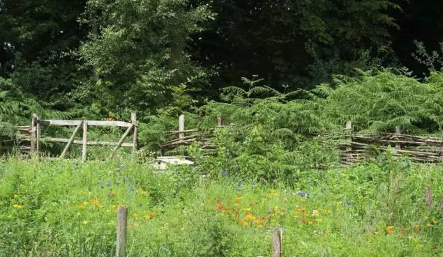树林里养了各种家禽动物， 于是他们又有了自己的开放式农场。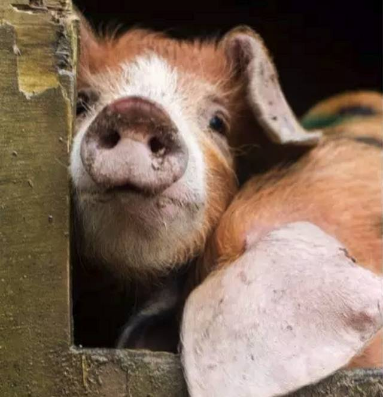
别看现在农场收拾得像模像样， 但其实一开始时， 这对生活在都市里的夫妇， 也是什么也不懂到处手忙脚乱！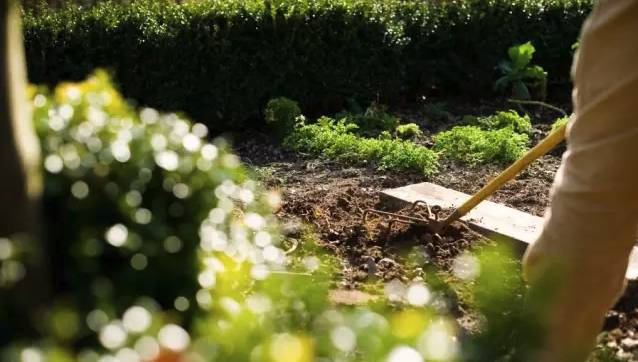
他们想像祖辈一样依靠大地过日子， 可当等到播种时才发现并不懂时令节气 …… 该如何去配合大自然的规律务农？ 种植、蓄养牲畜时又该注意些什么？ 真是一点头绪也没有， 常常好心办坏事搞得屋里屋内一团糟。
没有大板寸的液晶电视， 没有出门就是公交、超市的便捷交通， 而且每天还要面对着臭烘烘的肥料， 换成一般人早就坚持不下去了， 城里多方便多好玩， 直接搬回去城里不就好了！ 可尼克和贝拉夫妇却偏不， 无论多脏多累多难搞， 他们最终都咬牙坚持下来了， 因为他们说好： 要给孩子们一个自然之家。
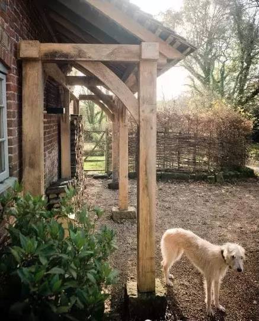是的哟没错， 这对幸福的英国夫妇， 他们还拥有一对超级可爱的女儿！ 10岁的弗洛拉和7岁的佩吉。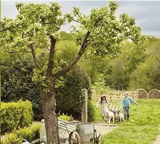
平时夫妻俩忙完农活后， 会带着两个可爱女儿在农场里露营， 在自家绿树的掩映下生火做饭， 然后在繁星的温柔光辉里， 一家人互相拥抱着入睡。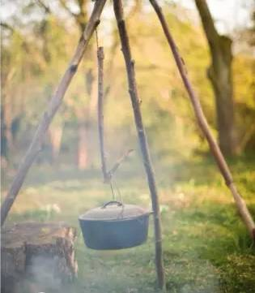
而当贝拉和尼克没空的时候， 小姐妹俩就会自己推着家里的小推车， 去林子里摘熟透的水果。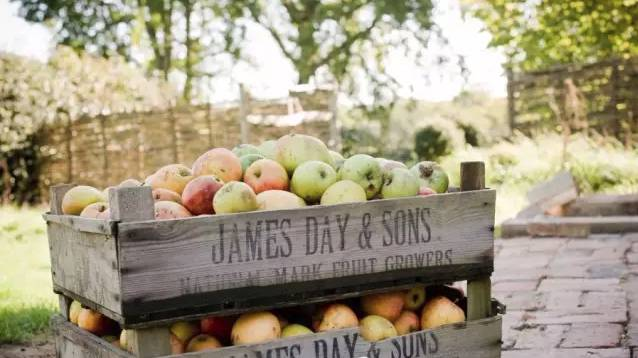
“咯咯咯，咯咯咯，咯咯咯！” 哎呀母鸡又在下蛋了~~ 这是小姐俩自己在农场里养的小母鸡， 每当听到母鸡“咯咯咯”叫唤时， 她们就会飞快跑到亲手搭建的鸡窝， 争相去捡那还热乎乎的鸡蛋... 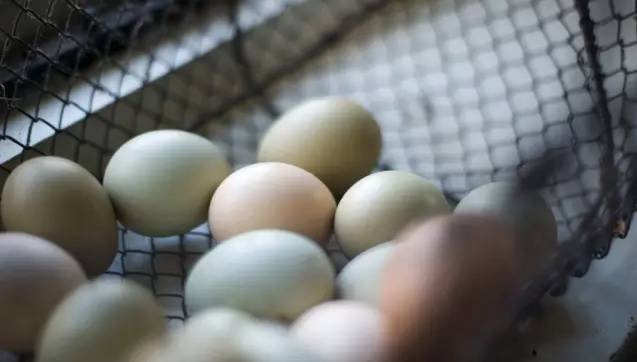
只为一次姐俩的煎鸡蛋厨艺大比拼！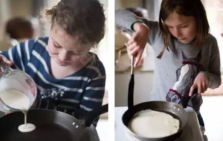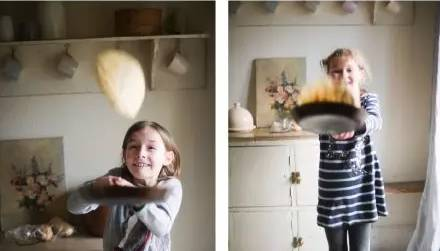